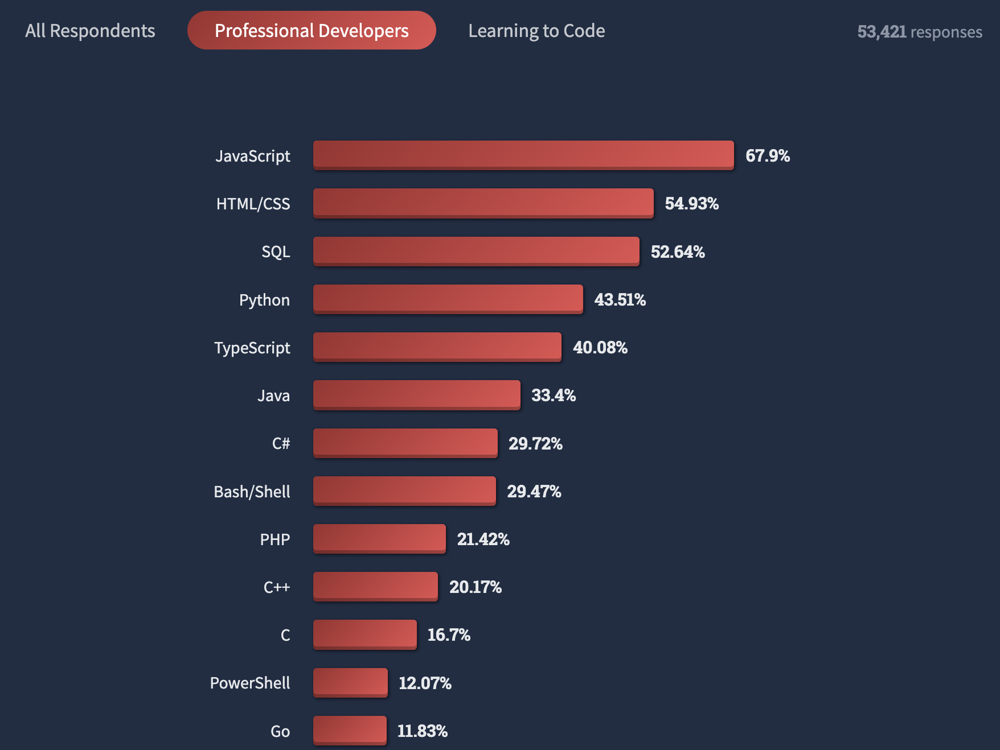
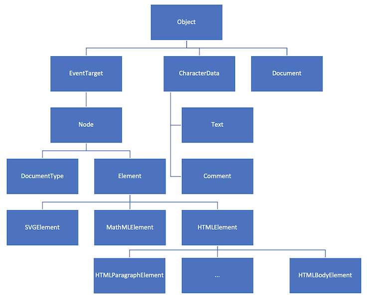

TCH056 - Programmation Web
Chapitre 04: Javascript
Anis Boubaker, Ph.D.
Prof. Enseignant en informatique
Plan du chapitre
Génèse du langage
JavaScript (JS) had to “look like Java” only less so, be Java’s dumb kid brother or boy-hostage sidekick. Plus, I had to be done in ten days or something worse than JS would have happened

Historique
Faites défiler la ligne du temps avec la flêche. Rechargez la page si la ligne du temps ne s'affiche pas.Intégrée dans Netscape 2
ECMAScript1 (ES1)
IE4 est le premier navigateur à l'implémenter
Netscape continue le développement indépendant de Javascript pour son navigateur
ECMAScript 3 (ES3)
La fondation Mozilla effectue une refonte de Netscape: le navigateur Firefox qui inclut JS 1.5
Abandon de ES4 et sortie de ES5
Sortie de ES6 qui comporte l'essentiel des améliorations modernes du langage
Support de ES6 dans tous les navigateurs modernes (sauf IE11)
Chaque année une version de ECMAScript est publiée (ES 20xx) rendant l'évolution du langage plus agile.
Motivation
- HTML nous a permis de définir le contenu
- CSS nous a permis de définir l'apparence des pages
- Javascript nous permettra d'ajouter des aspects dynamiques à nos pages. Ex.:
- Réagir aux actions de l'usager
- Charger du contenu dynamiquement
- Animations
- ...
Environnements
Le seul langage de programmation qui s'exécute dans un navigateur! mais aussi...
Un langage populaire
Sondage StackOverflow 2022, mené auprès des développeurs
Une syntaxe connue...
Philosophie
Tout est objet
- Les types primitifs
- Les fonctions
- Le code!
Non-typé
- Typage dynamique (Duck typing)
- Le type est mutable
Protoypal
- Langage orienté-objet
- Différent des langages OO traditionnels
Évenementiel
- Cycle d'exécution non bloquant basé sur les événement
- Modèle asynchrone
Javascript: Où dans une page Web?
Comme attribut (très mauvais!)
...
Cliquez ici!
Balise script (éviter)
...
<script type="text/javascript">
alert("Bonjour le monde!");
</script>
Dans un fichier externe (Mieux!)
Dans un fichier externe comme module (Parfait!)
Les attributs `defer` et `async`
- `defer`: Charger le script en parallèle, l'exécuter après le chargement de la page
- `async`: Charger le script en parallèle, l'exécuter dès qu'il est disponible
-
`async` et `defer`: Le script et chargé et exécuté immédiatement, bloquant le chargement de la page
Plan du chapitre
Préambule
- On ne reviendra pas sur la syntaxe evidente (structures conditionnelles et itératives) - c.f. INF155/INF111
- Pas de conception OO (classes, prototypes, etc.) mais n'utiliserons des objets existants et leurs propriétés/méthodes
- Certains concepts avancés ne seront pas abordés (ex.: fermetures, promesses, async)
Les variables
Le mot clé let permet de déclarer une variable.
Les variables sont typées dynamiquement.
La fonction typeof permet de déterminer le type inféré:
Booléens et vérité
En Javascript, le type booléan existe et peut prendre la valeur true ou false
MAIS... Toute valeur "véridique" (truthy) sera considérée comme vraie et une valeur "non-véridique" (falsy) sera considérée comme fausse
Valeur véridique
- Toute valeur n'étant pas false, 0, -0, "", null, undefined et NaN.
- Ou encore: toute valeur qui n'est pas true lorsque convertie en Booléen avec Boolean()
Undefined c'est aussi...
- La valeur de propriétés iniexistantes dans un objet
- La valeur de retour d'une fonction de type "void"
Conversion explicite de types
Les fonctions Boolean(), Number() et String() permettent de convertir entre type de données (type casting):
Plan du chapitre
Définition d'un objet
Un objet est un ensemble de propriétés de type clé-valeur. On peut définir un objet à l'aide d'un littéral en notation JSON { ... }
On accède aux propriétés d'un objet à l'aide de la notation xxx.yyy:
Tableaux
En JS, un tableau est une structure pouvant contenir plusieurs éléments pas forcément du même type
Tableaux - Méthodes et attributs utiles
Modification d'un objet
- Les objets en JS n'ont pas de structure pré-établie* (i.e. pas de classes, comme en Java)
- Il est possible d'ajouter/supprimer des propriété à tout moment
Modification d'un objet (2)
- On peut accéder aux propriétés d'un objet comme un tableau associatif:
Objets et tableaux
Plan du chapitre
Chaines de caractères
- Le type chaine de caractères (string) est un type de base en JS
- Syntaxe:
Caractères dans une chaine
- On accède aux caractères par indice, avec la notation tableau ou la méthode at
Plan du chapitre
Fonctions
Plusieurs façon d'en déclarer:
Appel d'une fonction
- Syntaxe semblable aux autres langages de la famille C: il suffit de spécifier le nom de la fonction, suivi des paramètres effectifs entre parenthèse.
- Si la fonction est un attribut d'un objet, on l'invoque en utilisant la notation "point"
Paramètres d'une fonction
- Aucune règle sur les paramètres: les types sont dynamiquement typés et le nombre de paramètres peut varier du nombre de paramètres défini
Valeurs de paramètres par défaut
- Pour éviter qu'un paramètre omis lors de l'appel ait la valeur undefined, il est possible de donner des valeur par défaut aux paramètres:
Valeur de retour
- Une fonction ne peut retourner plus d'une valeur
- La valeur retournée peut être un type simple (number, string), un objet (ex.: array, ou objet personnalisé), et même une fonction (voir plus loin)
- Une fonction qui ne retourne aucune valeur retournera la valeur undefined
Fonctions variadiques
- On appelle une fonction variadique dont le nombre total de paramètres n'est pas défini d'avance
- En JS, toute fonction peut recevoir plus d'arguments que spécifié, il suffit alors d'accéder aux autres paramètres à l'aide du tableau arguments
Fonctions variadiques
- ES6 a introduit une nouvelle syntaxe pour définir des fonctions variadiques en utilisant la notation ellipse (...)
- Il est préférable d'utiliser cette syntaxe car elle améliore la maintenabilité du code.
Fonctions = Données
En JS, une fonction est une donnée qu'on peut affecter...
Fonctions = Données
On peut même retourner une fonction...
Fonctions = Données
Et passer une fonction en paramètre...
Fonctions d'ordre supérieur
- On appelle fonction d'ordre supérieur une fonction qui reçoit une autre fonction en argument, ou qui retourne une fonction.
- Les fonctions d'ordre supérieur sont un mecanisme puissant qui offre des flexibilités et des applications intéressantes.
- Spécifiquement, les fonctions itératives sur les tableaux suivantes (à connaitre):
Map Reduce Filter forEach
Plan du chapitre
Rappel: Arborescence HTML

DOM: Document Object Model
- Le DOM est une une structure hiérarchique qui représente le contenu d'une page sous forme d'une arborescence
- L'arbre peut-être manipulé avec du code Javascript: tout changement au DOM se reflète de façon dynamique sur le rendu de la page (à l'écran)
- La manipulation se fait à travers une API commune à tous les navigateurs
- Le DOM est une entité qui évolue constamment dans les pages/application WEB modernes
API du DOM
Ensemble de fonctions disponibles pour:
- Localiser des éléments de la page
- Modifier des éléments identifiés (contenu, ajout d'enfants, suppression)
- Accéder et agir sur les différentes propriétés des éléments
Il existe plusieurs DOM (HTML, SVG, XML), mais ils partagent tous la même API normalisée par le W3C.
Construction du DOM depuis le HTML
Métamodèle du DOM
Types d'éléments du DOM
Plan du chapitre
Sélection d'éléments
Quatre approches/méthodes de sélection (démontrées en classe)
Sélection par Identifiant
const conteneur = document.getElementById('conteneur');
Sélection par Classe
const hots = document.getElementsByClassName('hot');
//NOTE: `hots` est un tableau!!
Sélection par Type
const paragraphes = document.getElementsByTagName('p');
//NOTE: paragraphes est un tableau!!
Sélection par Sélecteur 1/2
const lesHot = document.querySelector('#conteneur p.hot');
//NOTE: Un seul élément est sélectionné (le premier
// qui est satisfaisant)
Sélection par Sélecteur 2/2
const lesHot = document.querySelectorAll('#conteneur p.hot');
//NOTE: Tous les éléments satisfaisants au sélecteur seront
// retournés (dans un tableau)
Sélection en sous-arbre
- Les méthodes `getElementsByClassName`, `getElementsByTagName` et `querySelector` sont implémentées dans `Element` (sont disponibles pour tout objet de type Element)
- Utiliser ces fonctions sur un élément en particulier (pas document) exécutera la requête comme si l'élémenent était la racine de l'arbre.
- Les éléments retournés seront seulement ceux qui sont descendants de l'élément.
const conteneur = document.getElementById('conteneur');
const paragraphes = conteneur.getElementsByTagName('p');
//NOTE: Seuls les paragraphes descendants du div#conteneur
//seront sélectionnées!
Noeud parent
const lien = document.querySelector('div p a');
const leSpan = lien.parentNode;
Noeuds Enfants
const conteneur = document.querySelector('div#conteneur');
const enfants = conteneur.childNodes;
//Contient les noeuds p.para.hot, p#texte et div.hot
Premier et dernier enfants
const conteneur = document.querySelector('div#conteneur');
const premier = conteneur.firstChild; //p.para.hot
const dernier = conteneur.lastChild; //div.hot
Frères précédent et suivant
const conteneur = document.querySelector('p#texte');
const premier = conteneur.previousSibling; //p.para.hot
const dernier = conteneur.nextSibling; //div.hot
Contenu d'un élément
Trois méthodes pour lire le contenu d'un élément (et pour le modifier!)
>> Démonstration
Plan du chapitre